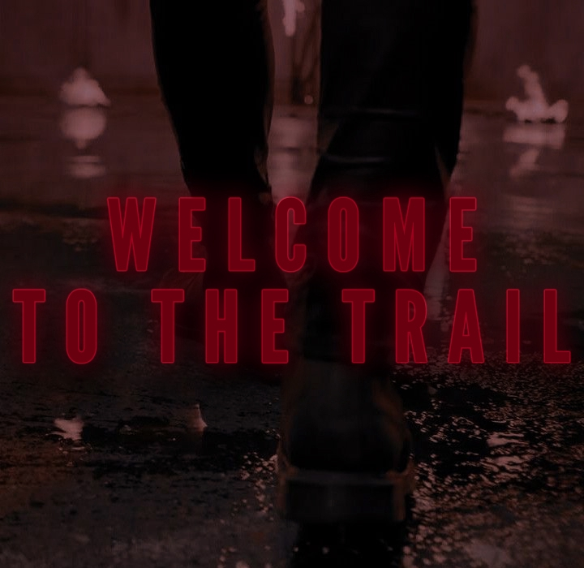

Основной лор мира «Bloody Trail»

Часть I: Введение
Мир Ролевой — сравнительно привычный в понимании мир, в котором превалируют элементы «Готик-Панка», но с одним лишь значительным исключением в виде мистической изнанки, которая присутствует в этом мире. Как говорил Шопенгауэр: «Наш мир — худший из всех возможных миров», и относительно сеттинга ролевой, эти слова выкручены на максимум, оголяя как обычную, знакомую всем житейскую агонию, так и ужасы, которые проясняются внутри сверхъестественного мира, сокрытого от глаз смертных для сохранения и без того рассыпающейся человеческой цивилизации.
Являясь рефлексией нашего мира, «Кровавый Троп» — это его изуверское отражение, в котором искажены и извращены даже самые невинные черты жизни. Отталкивающее окружение здесь темно и жестоко, с зашкаливающим количеством интриг и тайн. Человеческая цивилизация будто бы искусственно взращена и выстроена, чтобы служить декорацией для игрищ деспотичных монстров, разменивающие людские жизни подобно игральным фишкам. Человечество здесь не играет абсолютно никакой роли, оно находится в упадке и только их исключительная роль в виде скота заставляет вампиров, магов, духов, оборотней и других власть имущих существ держать человечество на невидимом поводке, оттягивая их подальше от ада, который приближается к смертным быстрее, чем они успевают это осознать. Человечество разбивается о скалы вновь и вновь, а бессмертные монстры вынуждены собирать их осколки снова и снова.
Упомянутое общество сверхъестественных существ, собранное из вампиров, оборотней, магов и прочих-прочих отличается от привычного литературного представления тем, что никто из перечисленных не представляет глупых одиночек, которые выпячивают наружу свою природу для демонстрации превосходства над смертными. Будь это так — в этом мире остались только люди, которые, хоть и являются исключительно пищей и летящими щепками в борьбе за власть, умудряются выживать там, где им выжить не суждено. Число тех же вампиров достаточно велико, чтобы создать сокрытое от смертных общество и управлять людьми, как марионетками. С каждым годом удерживать человечество от полного краха всё сложнее и сложнее. Господствующий класс в виде Монстров вынуждены прилагать титанические усилия, чтобы он имел хоть какую-то целостность.
Но и это не единственная проблема мироустройства. Отсутствие «нормы» и постоянный упадок даже у тех, кто находится на вершине пищевой пирамиды — неотъемлемая часть этого мира. Котерии вампиров, яростные стаи оборотней, круги оставшихся в живых магов — все вынуждены драться как друг с другом, так и со своими же собратьями в тайной войне за любые крохи власти. Никто не упустит возможность заполучить ту дурманящую и портящую силу, если до её жалких крупиц приходиться даже хвататься зубами.
Мировые войны, катастрофы, глобальные экономические кризисы, боевое использование ядерного оружия — всё это отголоски той борьбы, которую между собой ведут эти существа. И людям приходиться слепо пожинать плоды этой бойни, на своей шкуре чувствуя несправедливость, классовое расслоение, бедность, упадок, апатию сильного к слабому и экзистенциальный ужас. В мире «Кровавого Тропа» все черты выражены куда более остро и ощутимо, чем в нашем. Человечество никогда не выйдет из того болота, в которое их окунули незримые Хозяева, а темные отражения видны отовсюду: на языке оседает мазут, на лице можно ощутить тяжесть уходящего в воздух чёрного дыма, угрожающая, острая готика в архитектуре и грозные фигуры каменных ангелов внушают тревогу, а на улицах шныряют панки, деструктивными речами вдохновляющие других людей уничтожить ненавистный режим.

Часть II: Начало времён
Чтобы понять, с чего всё началось, я хочу попросить открыть всех вас ваши библии на «Книге Чисел» и найти там рассказ про Валаама — прорицателя и мага из Ветхого Завета. Валааму надлежало навести проклятие на еврейское войско Моисея по просьбе моавитского царя Валака, чтобы войско последнего в конце концов победило евреев.
Если же говорить более подробно, то измененная под канон ролевой библейская притча обстояла так: древние израильтяне под предводительством Моисея, после исхода из Египта завладевают землями за Иорданом. После этого ими собираются вооружённые силы для захвата земли Ханаанской, которую им обещал сам Бог, он же Яхве. Валак, царь Моава, соседней к Хаанану страны, не имея достаточных войск для отражения еврейской агрессии был вынужден уговорить некого Валаама напустить на будущих врагов проклятья, дабы в решающий момент армия Валака одержала победу. После долгих уговоров, Валаам отправился в путь.
В Библейском каноне он отправился на ослице и путь прорицателю перегородил видимый только животному Ангел, которого послал Яхве. Валаам стал избивать остановившуюся ослицу, после чего она заговорила и пыталась доносить волеизъявления Бога до Валаама. После этого Валааму не только не получилось наслать проклятие на еврейский народ, но и он трижды его благословил.
В каноне «Кровавого Тропа» Валаам отправился до войска Моисея пешком, а по пути ему повстречался Ангел, который был послан Валааму дабы изречь ему волю Божью, предостеречь от того, что если прорицатель перейдет дорогу Богу, то ему точно не ждать добра. Вместо того, чтобы выслушать обращение Бога от Ангела, Валаам сильно ранил Ангела серебряным мечом, тем самым восставал против Воли Бога, не зная об этом.
Раненный Ангел отбыл обратно к Богу, умирая у него на руках, но успевая донести до него то, что Валаама не остановить. Разгневанный Яхве, оскорблённый таким жестом от Валаама, решил вмешаться в дела смертных, защищая евреев от проклятия и вместо этого проклиная оракула, который узнает о своём проклятии только после своей же смерти — от рук израильтян во время истребления мадианитян.
Однако Валаам не умер, он не пошёл на суд, ему был воспрещен вход в верхнее царство, и судьба ему была уготована похуже смерти.
Приговор: не-жизнь. Бог проклял Валаама, обрекая того на вечную жизнь и бесконечную жажду крови, но это еще не все. Вскоре Валаам понял, что вечное скитание и жажда по алой влаге меньшая из его проблем. Не зная того, Валаам сначала не мог контролировать процесс отнимания крови у людей, из-за чего порой ему приходилось отдавать часть своей крови, чтобы люди не умирали. Как оказалось, таким образом он давал им свою проклятую кровь, которая обращала их в безжизненную оболочку кровожадного монстра, коим и являлся сам Валаам. Плодя своих «детей», в будущем прорицатель будет выть от горя, ибо станет свидетелем того, что его дети будут рвать друг другу глотки в зацикленной бойне за власть и грубые стимулы.
Понимая, что он натворил, Валаам решает собрать своих детей, образуя из них второе поколение Вампиров, состоящие из 6 уцелевших детей. Проклятый оракул обращал больше людей в монстров, но обуздать своё проклятие и принять его смогли только шестеро.
Второе поколение — 6 детей Валаама, которым он дал становление. В современной ночи Вторым Поколением называют 6 основателей кланов вампиров, давшим начало Третьему Поколению — первому многочисленному поколению вампиров, которые стали расселяться по всей земле.
Он собрал их для того, чтобы утолить свои печали и вместе с ними понять, как жить с этой поганью в проклятой крови, которую прозвал Яхве, в честь Бога.
Яхве — проклятая кровь Вампира, в которой содержится как его сила, так и связь с первым вампиром, с Валаамом, именуемого как «Отец». Яхве толкуется как «Дающий жизнь», что очень соответствует для вампиров, ведь это и еда, и их источник силы, поддерживающий не только основы искусственного бессмертия, но и источник мистических способностей, называемыми Вампирскими Дисциплинами.
Считается, что каждый Вампир — марионетка своего Сира и Валаама, ведь вместе с кровью Сира, дающую во время становления, переносится частичка его личности. Таким образом, новообращенный меняется не только радикально физически, но и частично ментально.
Но почему марионетка Валаама? Потому что в каждом Вампире присутствует часть крови Валаама, которую он давал ещё своим детям из второго поколения Вампиров.
Вампиры из более молодых поколений, начиная с 14-го (Обращенные с 1980-го), могут иметь крайне слабую и далекую кровную связь со своим Отцом, из-за чего их Вампирские черты слабо выражены. Такие вампиры с трудом могут нормально питаться из-за ужасной боли в клыках и использовать дисциплины. Они мало чем отличаются от людей, у них, по слухам, может появиться возможность вкушать людскую еду, зачать и родить ребенка, а также находиться под солнцем. Подобные кадры крайне неуважаемы в Вампирском обществе.
В современную ночь верить в Валаама — довольно сомнительное дело. Многих последователей веры в его учения высмеивают, их встречают отстраненным шепотом в Бастионах, их считают маргиналами, как и их веру в то, что Валаам манипулирует всеми сородичами через Яхве.
Последнее время эти учения стали не только высмеивать, но и пресекать карательными выговорами за их распространение в кругах Сородичей. Вампиры самой популярной в Великобритании секты «Синдикат» особо не любят, когда в их кругах распространяется лжеучение о Валааме.
Часть III: «Лицедейство»
Изначально задумывалось, что «Лицедейство» будет являться сводом правил из известных Вампирских истин, которые помогли бы Сородичам жить в мире людей, не раскрывая своего существования перед смертными. В этот свод правил входят как банальное здравомыслие в виде сокрытия собственной природы и выделение территории под «Охоту», так и более узкие моменты, позволяющие Вампирам-Старейшинам приглядывать за другими Сородичами и пресекать попытки приоткрыть завесу изнанки общества Монстров смертным. Раскрытие существования не только вампиров, но и всей магической изнанки мира — смертный приговор. Однако, как показало будущее, похожим Лицедейством промышляют не только вампиры, но и остальные сверхъестественные существа и даже люди-охотники.
Истоки «Лицедейства» берутся со времён жития Валаама, который объяснял эти правила своим детям, как основу Вампирского существования среди людей, дабы не навлечь на себя смерть и не стать зверем, жаждущим исключительно крови. С другой стороны, есть более популярная точка зрения, которая подразумевает, что «Лицедейство» придумали Старейшины кланов для удержания своей власти и контроля за всеми Сородичами. Для этого им пришлось установить общие идеи, которые просуществовали в течение тысячи лет. Как правило простого сокрытия природы существовала еще во времена обращения «Третьего Поколения», так и была переработана после «Восстания Неонатов», когда правила превратились в инструментарий для удержания власти.
Восстание Неонатов — произошедшее в средневековой Европе историческое событие, датируемое 1389-ым и продлившееся до 1499-го года. Этим событием обозначают восстание молодых Вампиров против 6-ых старейшин в целях освободиться от строгого надзора за Сородичами.
Неонаты, а именно так звали сторонников восстания, требовали от вампирского общества перестать жить в тени от людей и пресмыкаться перед ними, требовали того, чтобы право сильного, данное им при рождении, могло демонстрироваться свободно
Уставшие от молодой крови, которую нельзя было убедить в необходимости скрытого существования и болезненности положения, к которому стремятся Неонаты, Старейшины устроили показательный суд над одним из основателей реваншистских идей, но вместо ожидаемого послушания произошло восстание, представляющие из себя стычки между Сородичами-Неонатами и Сородичами-Традиционалистами.
Недостаток организации, внутреннее соперничество, плохая связь между Сородичами и куда большие ресурсы в распоряжении Старейшин не давали Неонатам добиться чего-то стоящего. Война превратилась в серию стычек, начавшихся в Испании и закончившихся спустя 110 лет в Берлине, когда убили последнего значимого лидера Неонатов.
После этого восстания образовались 3 ключевые фракции в мире вампиров:
«Августинский Орден» — будущий «Синдикат» и сторонник статуса-кво, а также ревностные приверженцы «Лицедейства». После конца Восстания Неонатов они смогли добиться положение в мирном пакте о смертной казне за нарушение «Лицедейства», из-за чего правила из здравого смысла превратились в способ удержания власти старых вампиров и доминирования конкретно этой фракции в мире современной ночи.
«Коммунары» — бунтари и отщепенцы, которые не смогли смириться и окончательно принять доминантное положение Старейшин, и отказывающиеся ложно признавать, что их борьба закончена. Они выступают за соблюдение «Лицедейства» как за простое следование здравому смыслу. Коммунары сопротивляются алчным до власти Старейшинам, превратившие здравый смысл в монополию на власть в мире вампиров. Соблюдают «Лицедейство», но не признают власть «Августинского Ордена» и являются их идеологическими врагами.
«Длань Хаоса» или просто «Хаоситы» – монстры, глубоко убежденные в превосходстве вампиров над всеми другими расами и стремящиеся превратить человечество в послушный скот, годный лишь как корм. Пока другие сохраняют остатки человечности, Хаоситы упиваются в своём проклятии и нечеловеческими силами. Среди них в основном находятся падшие аристократы из клана «Эспада», манипулирующие людьми и не считающиеся с их жизнями. Есть среди них и экзотичные вампиры — изверги из клана Уробороса. Они полностью отринули человечность и человеческий вид, видоизменяя себя так, как того захотят и используют людей в качестве скота для своих экспериментов. Вынуждены соблюдать «Лицедейство» не из-за уважения к правилам, отнюдь, а из-за того, что они в постоянном меньшинстве и если будут демонстрировать свою природу — их истребит либо «Орден», либо «Коммунары»
Эти правила редко записывают, но никогда не забывают, при этом передают молодым Сородичам из уст в уста,
из-за чего правила знают в той или иной форме. Даже те, кто их презирает — трактуют в иной форме, хоть и
смысл остаётся один и тот же.
Правила так же могут различаться в формулировке в зависимости от клана, возраста и личного мировоззрения.
Правила лицедейства:
Сокрытие — основа современного общества Вампиров. Сокрытие не даёт людям узнать о вампирах и обществе Сородичей, и гарантирует им право на жизнь в мире, при этом накладывая некоторые обязанности в обмен на безопасность: обходительно относиться к использованию своих сил, воплощению планов и кормёжке.
Всё, что касается демонстрации вампирской природы — должно скрываться от людских глаз или демонстрироваться так осторожно, чтобы не оставалось свидетелей. За 3 легких нарушения «Сокрытия» полагается смерть. Если же «Сокрытие» было нарушение ощутимо сильно, Барон города имеет право на смертный приговор после 1 нарушения.Территории — каждому Клану выдана своя территория, которую он может адаптировать под охотничьи угодья и нужды. Хоть, технически, все территории принадлежат Барону, он следит за соблюдением «Лицедейства». Он же выдаёт и следит за тем, чтобы на территориях одного Клана не охотился другой без разрешения первого, дабы соблюсти правило гостеприимства и дабы каждый глава территории был лоялен правилам «Лицедейства» и Барону (последнее соблюдается не всегда из-за Коммунаров).
Это же не отменяет ответственности тех, кто заходит не на свою территорию, хоть ему и должно быть оказано гостеприимство со стороны владельцев. Если же Сородич нарушает правила на не своей территории, кормится там без разрешения владельца, открывает ресторан без осведомления об этом, или ведёт иные дела, то его имеют права выгнать, а при более тяжких нарушениях — убить. При этом все эти правила не распространяются на Барона и его прямых подчиненных, которым необходимо исполнять свои обязанности на чужих территориях.Обращение — все Бароны настаивают на том, чтобы перед тем, как обратить смертного в вампира, у них просили дозволенность на это, которой могут как отказать, так и удовлетворить, в зависимости от просящих. Большинство Сородичей так и делают, но не из-за уважения, а из-за страха, так как под угрозой находится не только Сородич, но и его будущее дитя, которое могут казнить за безответственность своего Сира. В худшем случае — Сира убивают, а дитя может принадлежать как Барону Города, так и другим вампирам, если его усыновят.
«Лицедейство» удовлетворяет право Барона и на то, чтобы ограничить рост популяции вампиров. Ведь за обращением идёт просто чудовищная волокита, чтобы убрать следы предыдущей жизни. На этом поприще был создан чин «Карателя Синдиката», который следит за всеми территориями и имеет регалию убивать или задерживать легкомысленных Сиров, решивших обратить человека без разрешения Барона.Воспитание — сородич создаёт свое собственное дитя. Пока его потомство не станет самостоятельным, он должен управлять им во всем. Его проступки — полностью его ответственность. Сир ответственен за дитя так же, как люди над своими детьми. Если дитя угрожает «Лицедейству», Сир должен позаботиться о том, чтобы ликвидировать эту проблему и научить дитя соблюдать каждое правило и в будущем убедить Барона в хорошей подготовки дитя к не-жизни в обществе Сородичей.
Сир должен быть убежден и в том, что дитя принимает авторитет Барона. Перед тем, как даровать объятия — сир должен убедиться, сможет ли будущее дитя перенести изменения в душе и теле, поймёт ли оно продекламированные традиции. Ели же дитя было обращено, но не может принять себя вампиром — Сир должен его убить. В ином случае, об этом позаботится либо сам Барон, либо Каратели, которые убьют ещё и нерешительного Сира.
Сир волен отпустить своё дитя только тогда, когда глубоко убеждён в его компетентности и в том, что оно сможет зажить и чего-то достигнуть в обществе Сородичей.Уважение — простая «вежливость». Перед тем как войти — постучись. Попав в чужой город, ты должен представиться тому, кто правит в нем. Если ты не будешь принят, ты - ничто. Каждый новый Сородич, которого не знает Барон обязан представиться ему, обозначить своё присутствие на его территории. Процесс может быть пугающе формальным, с узнаванием о том, какие намерения носит новый Сородич в городе, какому Клану принадлежит, каков его статус, какова принадлежность и т.д.. При этом, порою достаточно зайти в Бастион и вежливо представиться.
Если же приезжий не решил проявить уважение к Барону, он подвергает себя серьезной опасности. Барон имеет полное и неоспоримое право воззвать ко Второму Правилу и безнаказанно уничтожить подозрительного Сородича. Неоспоримым является факт того, что Барон может допросить каждого новичка в городе и лучше бы приезжему Сородичу не врать насчёт своих намерений в нахождении домена Барона. В противном случае его либо не пустят в город, либо убьют, как только поймают за сомнительной авантюрой. При осведомлении Барона о плохой репутации Сородича, он и вовсе может его изгнать немедленно.Злоба — спорная традиция, запрещающая убивать Сородичей и пить их кровь.
«Каннибализм» является нарушением независимо от обстоятельств. За него убивают немедленно, а сам факт убийства выносится на суд и не всегда он бывает честным. Просто так Сородичам запрещено убивать друг друга, разве что из соображений самозащиты или нарушения «Лицедейства». После донесения об убийстве по этим причинам, дознаватели «Синдиката» будут выяснять каждое обстоятельство эксцесса. При этом, не редко бывает такое, что решение суда , во главе которого стоит Барон, может розниться от социального статуса виновного. Барон может вынести как более легкий, так и более тяжелый вердикт, но любой, даже самый нечестный приговор находится на совести Барона, который рискует своим креслом и своей шеей.
Существует также и «Право на убийство» — оно удовлетворяется, если Сородич донёс на другого Вампира, нарушающего те, или иные правила «Лицедейства». В более глобальных случаях определенному Сородичу выносится приговор «Экстерминатус», предполагающий, что на Вампира объявляется охота и его ликвидация требует незамедлительных мер.
Каждый, до чьих ушей дошёл приказ о «Экстерминатусе» обязан включиться в охоту. Сам же Барон обладает санкцией на убийство без этого разрешения и без будущего расследования, но при этом, опять же, невыгодные убийства, которые Барон свершает по собственному желанию могут укоротить его шею руками недовольных Сородичей.Не-жизнь — любому Сородичу запрещается иметь любые высокие отношения со смертными, если у них нет каких-либо намерений на взыскание будущей выгоды или обращения этого смертного в Вампира. Запрещено вступать с ними в какие-либо высокие, долгие отношения, к которым относятся любовь и дружба, но при этом разрешается недолго их имитировать для получения крови или иных материальных благ. За нарушение этого правила Сородич обязан либо обрезать все контакты со смертным, либо, если он слишком сильно впился в его жизнь — убить.